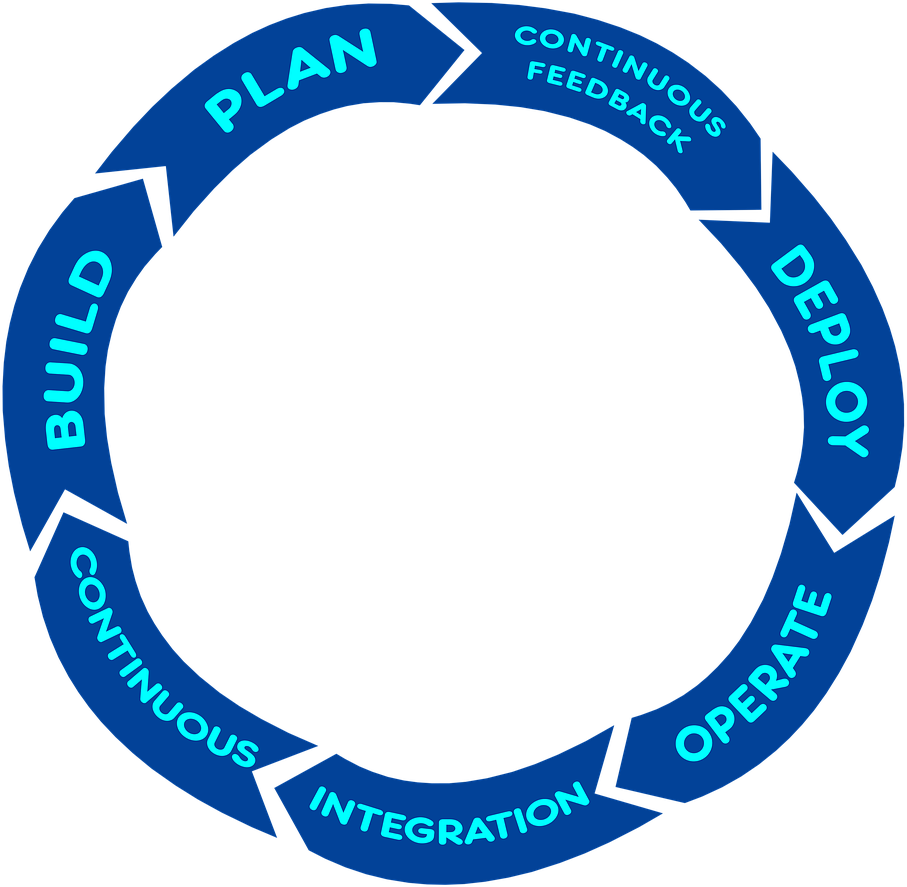

Szkolenia z Dockera i Gita
Dostępne szkolenia
Szkolenie z Dockera i szkolenie z Gita, są dla każdego, w różnych formach na różne potrzeby. Opowiedz nam swoją sytuację i wspólnie dobierzemy zakres szkolenia, np. wprowadzenie do Dockera od zera lub wprowadzenie do Gita od zera, czy np. optymalizacja pracy z Gitem w zespole, który już opanował podstawy. Pomagamy również usprawnić lub stworzyć od podstaw pipeline Continuous Integration & Continuous Delivery/Deployment (CI/CD).
Na warsztatach omawiamy teorię działania poszczególnych mechanizmów Gita i Dockera, ale skupiamy się na ćwiczeniach praktycznych.
Poruszamy również kwestie workflow, a całość uzupełniamy streszczeniem komend, z których korzysta się rzadziej, ale które potrafią czasem uratować skórę :)
Szkolenie organizujemy zarówno w formie ekskluzywnej w Twojej firmie, jak i w formie otwartej. Dojeżdżamy do każdego miasta w Polsce!

Nie trać czasu na zadania, które Git i Docker mogą wykonać za Ciebie... przećwicz je praktycznie!
Umów WarsztatyCo zyskasz dzięki szkoleniu z Gita i Dockera
GitWarsztaty są dopasowane pod Twoją sytuację - opowiedz nam o sobie i wspólnie dobierzemy zakres.
Bez względu na wybraną ścieżkę, oszczędzisz mnóstwo czasu, czyli pieniędzy. Dzięki umiejętnościom wyniesionym ze szkolenia z Dockera i Gita unikniesz wielu kosztownych i stresujących błędów, na które skazana jest samodzielna nauka, np. utraty napisanego kodu albo źle przygotowanego obrazu aplikacji.
Świadomie dobierając polecenie Gita, podniesiesz swoją wydajność i satysfakcję z pracy, a dzięki Dockerowi odzyskasz cenny czas deploymentu i zautomatyzujesz wiele codziennych czynności.
Zespół wdrożony do Dockera od zera

Szkolenie Docker od zera przewidziane jest dla zespołów, które dopiero wdrażają Dockera. Na warsztatach przechodzimy od najprostszych poleceń do bardziej zaawansowanych, skupiając się na tym, dlaczego poszczególne mechanizmy działają w dany sposób, zamiast sztucznie wykuwać polecenia na pamięć.
Naszym celem jest, żebyś po warsztatach poczuł Gita, oswoił się z jego filozofią i sposobem działania i dzięki dobrym praktykom uniknął niekorzystnych nawyków. Im bardziej się Gita rozumie, tym przyjemniej się... programuje, a wpływ Gita na jakość pracy staje się odczuwalny.
Zespół wdrożony do Gita od zera

Szkolenie Git od zera przewidziane jest dla zespołów, które dopiero wdrażają Gita. Na warsztatach przechodzimy od najprostszych poleceń do bardziej zaawansowanych, skupiając się na tym, dlaczego poszczególne mechanizmy działają w dany sposób, zamiast sztucznie wykuwać polecenia na pamięć.
Naszym celem jest, żebyś po warsztatach poczuł Gita, oswoił się z jego filozofią i sposobem działania i dzięki dobrym praktykom uniknął niekorzystnych nawyków. Im bardziej się Gita rozumie, tym przyjemniej się... programuje, a wpływ Gita na jakość pracy staje się odczuwalny.
tytuł2
excerpt2 Czytaj więcej...

tytuł4
excerpt4 Czytaj więcej...
O nas
Software craftsmanship to nasza pasja. Czysty kod w krótkim czasie, częsty deploy na produkcję, skutkujący szybkim feedbackiem od klientów, to wszystko możliwe, ale wymaga optymalnego wykorzystania istniejących narzędzi. Git i Docker są do wydajnej pracy niezastąpione, dlatego kładziemy nacisk nie tylko na nasze umiejętności programistyczne, ale na optymalne wykorzystanie Gita, Dockera i innych ważnych narzędzi. Lubimy pomagać i uczyć innych, dlatego oprócz wytwarzania oprogramowania chętnie dzielimy się swoją wiedzą i doświadczeniem.
Krzysztof Morcinek - pasjonat programowania skoncentrowany na platformie .NET i czystym kodzie. Oprócz szkolenia i występowania publicznego prowadzi bloga - KrzysztofMorcinek.Wordpress.com
Tomasz Skraskowski - również pasjonat programowania, wychowany na C++, obecnie wyspecjalizowany w C#. Szkoli, występuje, prowadzi bloga SoftwareDeveloper.Blog, na którym największą poczytnością cieszą się posty na temat Dockera i Gita. Więcej o trenerze na stronie Tometchy.com

Ostatnie wpisy
{% for post in site.posts limit:3 %}

{% endfor %}
Kontakt
Możesz skontaktować się z nami bezpośrednio, lub za pośrednictwem formularza.
Dojeżdżamy do każdego miasta w Polsce!
Krzysztof Morcinek: 737 692 782
Tomasz Skraskowski: 792 228 321
E-mail: kontakt@gitwarsztaty.pl
Podziel się!
Jeżeli znasz programistów, którzy nie korzystają z wielu dobrodziejstw Gita lub Dockera,
podziel się linkiem do inicjatywy GitWarsztaty, może dadzą się przekonać do zoptymalizowania swojej pracy.
Z góry dziękujemy! :)